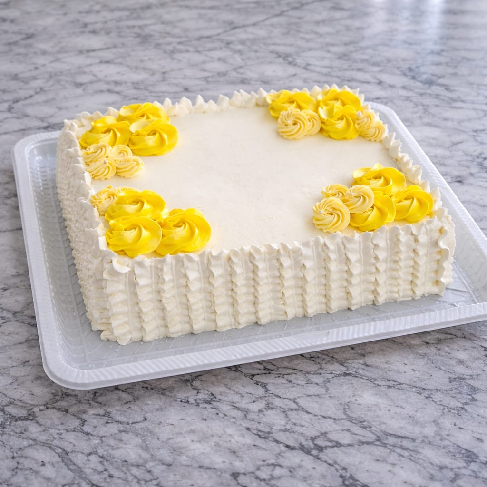
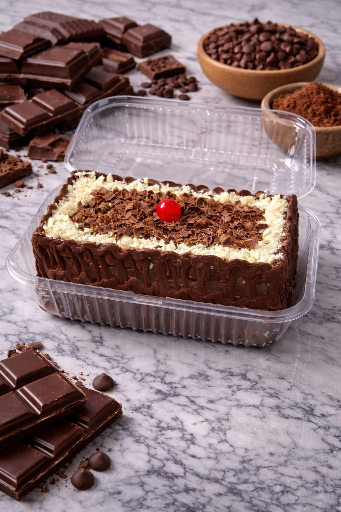
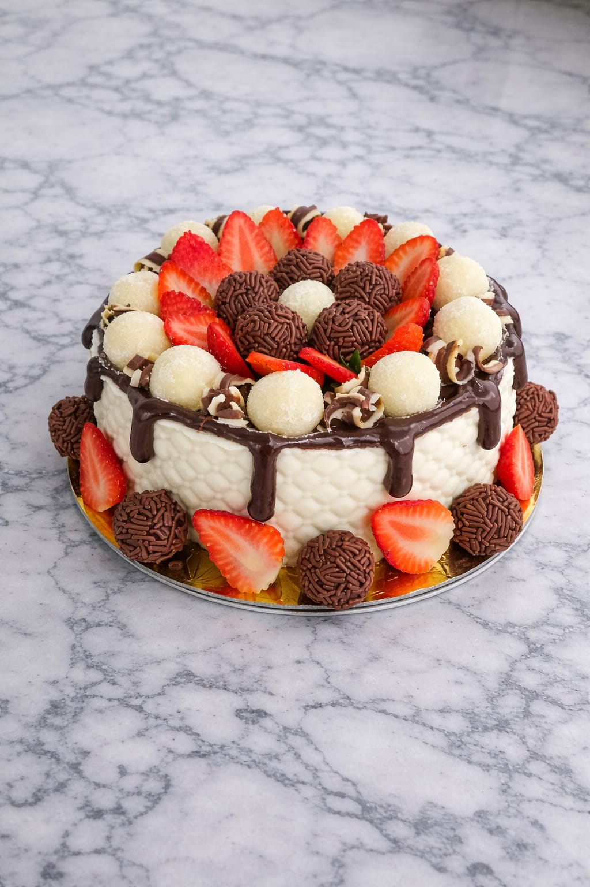
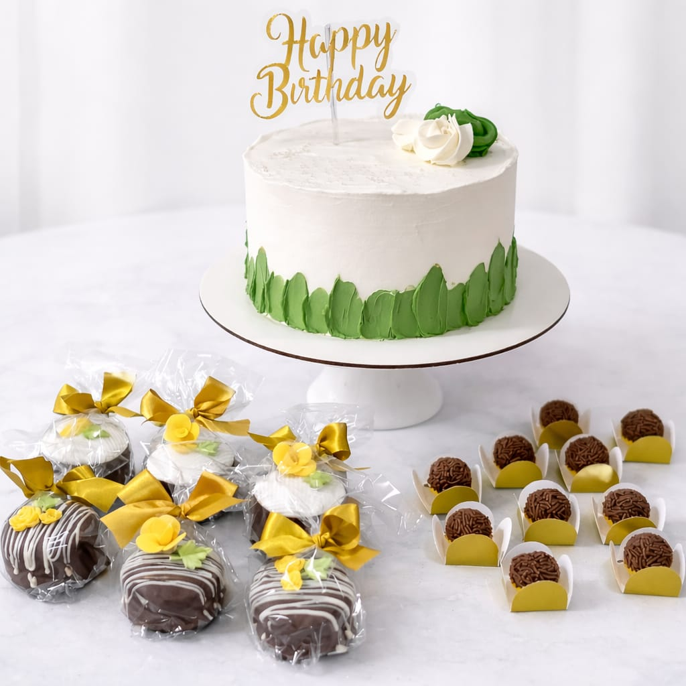
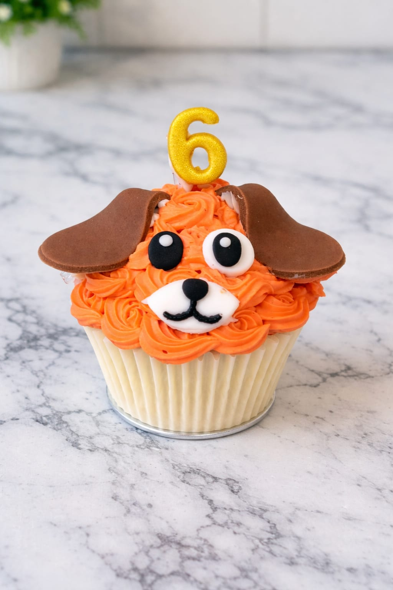

Bolos, Doces e Salgados feitos com carinho ❤️
Encomendas para festas, aniversários e datas especiais.
Produtos





Nossos destaques
Bolo de Aniversário
Nossos bolos são feitos para combinar com qualquer momento: aniversário em família, reunião com amigos, comemoração no trabalho ou até aquele dia que bate vontade de um doce especial. Os bolos são vendidos por quilo: você escolhe o tamanho ideal para a sua comemoração e, se quiser, também o tema. Trabalhamos com papelaria personalizada para deixar o bolo com a cara da sua festa.
Docinhos
Toda festa pede docinhos! Temos brigadeiro, beijinho, bicho de pé e várias outras opções. Aqui você também encontra pirulitos de chocolate, cupcake, pão de mel, chocomaçã e muito mais — todos podem ser personalizados para combinar com o seu evento. Para ocasiões mais elegantes, oferecemos doces finos como camafeu e bem-casado.
Salgadinhos
Nossos salgadinhos são no tamanho ideal para festa: come um e já dá vontade de pegar outro! Trabalhamos com salgadinhos fritos e assados, sempre fresquinhos e cheios de sabor, perfeitos para aniversários, reuniões e eventos em geral. Do clássico coxinha e bolinha de queijo até esfirras, empadinhas e enroladinhos — tem opção pra todo gosto.